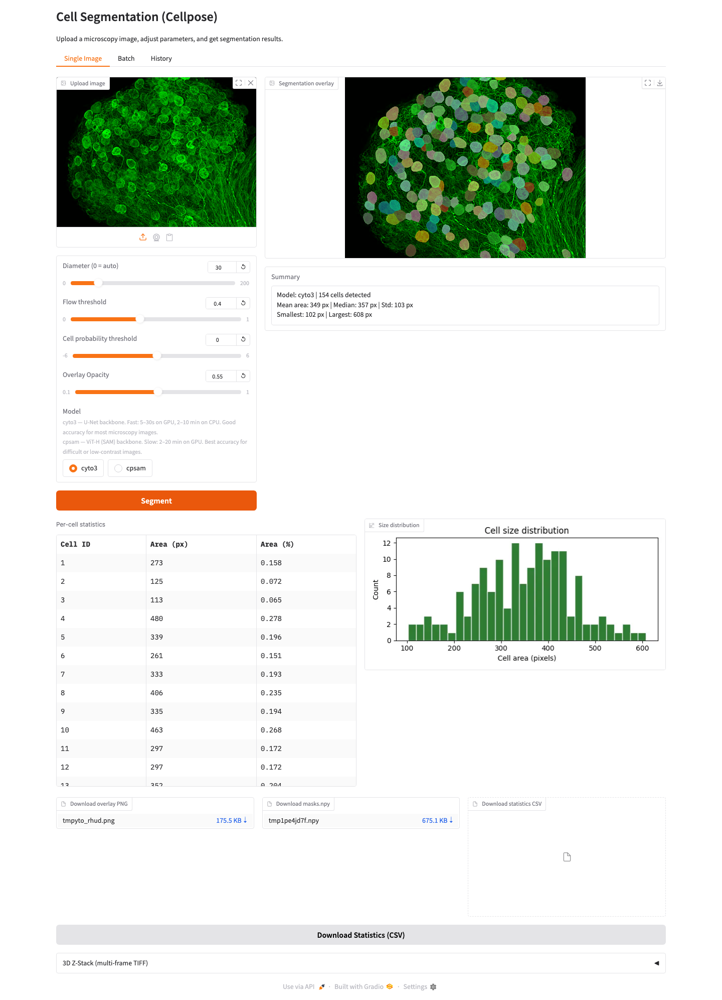

01 LIVE AT OSTFALIA

AI-ASSISTED SEGMENTATIONAI · COMPUTER VISION · MLOPS
Cell Segmentation Platform
GDPR-compliant, on-premise microscopy analysis with Cellpose, GPU inference, Kubernetes and a production CI/CD pipeline.
PythonFastAPIPyTorchDockerKubernetesHelm
View source → CHURCH MANAGEMENT
CHURCH MANAGEMENT